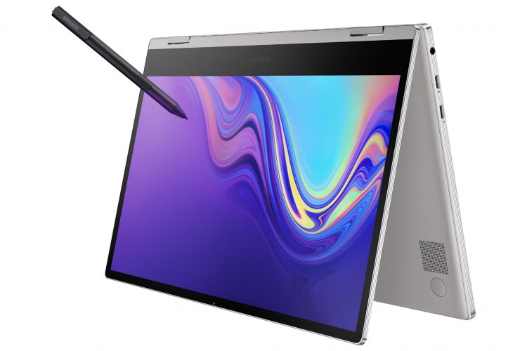
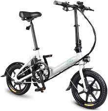
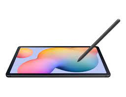

Horryzon Tecnologies
Samsung Notebook 9 Pro
“Nuestros consumidores quieren dispositivos modernos y con estilo que les permitan hacer más, sin importar el momento o el lugar”, dijo YoungGyoo Choi Vicepresidente Senior del Equipo de Negocios de PC, Negocios de Comunicación Móvil de Samsung Electronics.Samsung Electronics Co., Ltd. presentó durante el Consumer Electronics Show 2019 dos nuevas computadoras portátiles que combinan estilo y potencia: las nuevas Samsung Notebook 9 Pro y Samsung Notebook Flash.
$2,000
Rog Phone 3
La manera más fácil de definir a estos dispositivos es como equipos de gama alta, con añadidos enfocados en una experiencia de juegos mejorada. En el caso del Rogue Phone 3, Asus habla de una pantalla con una tasa de refresco de 144 Hz por milisegundo y una latencia táctil de 25 milisegundos. También cuenta con elementos como una batería de 6.000 mAh (para soportar la carga de los títulos más exigentes) e incluso un sistema llamado AirTrigger 3, que incluye un sensor de movimiento, además de los sensores táctiles ultrasónicos programables, lo que brinda a los jugadores más formas de controlar la acción.

$3,500
Bicicleta Eléctrica Zigna D2 Negra
Trasládate de manera veloz con tu nueva bicicleta eléctrica de marca Zigna; el modelo D2, es esencial para realizar tus actividades esenciales. Confeccionada con una velocidad máxima de 30 km/h, y recorre hasta 20 km. Está fabricada con un motor de 350 watts, batería recargable de litio con carga completa en 3 horas.
$15,000
Tablet Samsung Galaxy Tab S6
La tablet Samsung Galaxy Tab S6 Lite es tu compañera súper portátil para tomar notas. Ya sea que la uses para dibujar, jugar o aprender está hecha para ti.Cuenta con una gran pantalla de 10.4 pulgadas y un diseño delgado y ligero. Haz tuyo el poder y la potencia de su procesador Octa Core a 2.8 GHz, que junto con sus 4 GB de RAM y memoria interna de 64 GB te permiten descargar tus aplicaciones y contenido favorito, mientras las usas con rapidez.Inspírate con el S Pen incluido, su agarre natural, baja latencia e impresionante sensibilidad a la presión lo hacen ideal para todo, desde dibujar hasta editar documentos. Además, no se extraviará gracias al soporte magnético de la tableta. La potente batería de 7,040 mAh te da la libertad de trabajar durante largo tiempo sin preocuparte por la carga. Echa a volar tu imaginación la Samsung Galaxy Tab 6 Lite.
$10,000